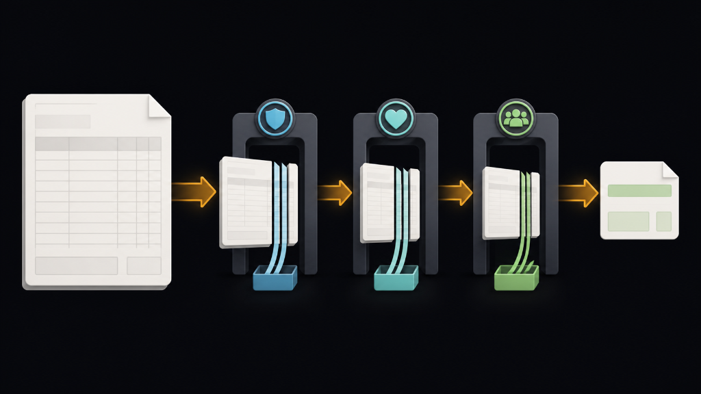
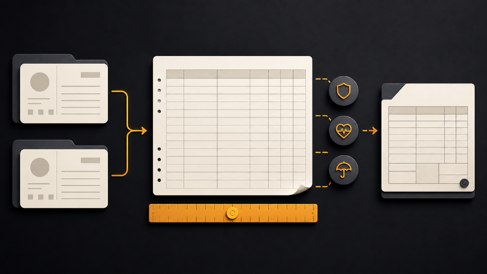
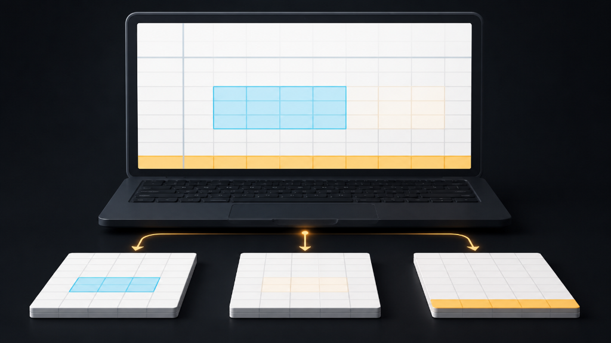
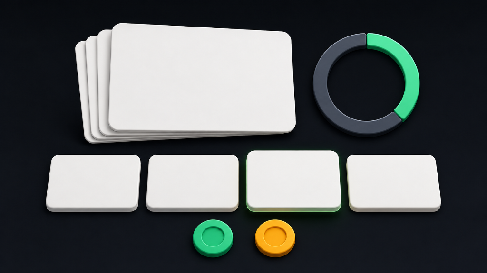

1¿Qué es una planilla?
Definición simple: la planilla es el listado periódico de lo que una empresa le debe a cada empleado (salario) y a terceros (ISSS, AFP, ISR, INCAF) por el trabajo de un mes. Mientras no se paga, es un Pasivo corriente.
Ejemplo salvadoreño: la tienda Repuestos ABC paga a su vendedora Ana $600 brutos al mes; antes de dárselos, la empresa ya sabe que $18 son para el ISSS, $43.50 para la AFP y $0 para Hacienda — ese dinero retenido, mientras no se entera a cada institución, también es un pasivo.
Concepto formal: la nómina o planilla genera simultáneamente (a) un gasto de sueldos para el período devengado y (b) varios pasivos corrientes de corto plazo: sueldos por pagar (neto), y retenciones/aportes por pagar a ISSS, AFP, INCAF y Ministerio de Hacienda.
2Tres conceptos clave
Pago bruto vs. neto
Bruto = todo lo ganado antes de deducciones. Neto (líquido) = lo que realmente recibe el empleado, después de ISSS, AFP e ISR.
Retención vs. aporte patronal
La retención sale del bolsillo del empleado (se descuenta de su salario). El aporte patronal es un gasto adicional que paga la empresa, no se descuenta a nadie.
Tope de $1,000 en ISSS
El ISSS solo cotiza sobre los primeros $1,000 del salario, sin importar cuánto gane el empleado. La AFP, en cambio, no tiene tope.
3Tasas y aportes vigentes — Unidad 1
| Concepto | Clasificación | Retención empleado | Aporte patronal |
|---|---|---|---|
| Seguro Social (ISSS) — base máx. $1,000 | Pasivo | 3.00% | 7.50% |
| Pensiones (AFP) — sin límite máximo | Pasivo | 7.25% | 8.75% |
| INCAF (capacitación) | Pasivo | — | 1.00% |
| ISR (Impuesto sobre la Renta) | Pasivo | Según tabla de tramos | — |
Ejemplo salvadoreño: en Repuestos ABC, por cada $600 de sueldo devengado, la empresa desembolsa además $45 de ISSS patronal, $52.50 de AFP patronal y $6 de INCAF — el costo real del empleado para la empresa es mayor al salario bruto.
⚖️ Marco Legal
- Art. 177 y 179, Código de Trabajo — vacaciones (15 días + 30%) y cómputo del año de servicio.
- Art. 169, Código de Trabajo — recargo del 100% por horas extra.
- Art. 29 num. 7 y Art. 33, Ley del ISR — deducción de $1,600 incorporada en las tablas de retención de personas naturales asalariadas.
- Ley del Seguro Social — tasas de cotización ISSS y tope de base de $1,000.
- Ley Integral del Sistema de Pensiones — tasas de cotización AFP, sin tope.
- Ley del INCAF — aporte patronal del 1%.
🎯 Cobertura en evaluaciones
Esta unidad se evalúa en el Parcial 1 (semana 6). No tiene Control ni Caso propio en su semana (el Caso 1 corresponde a la Unidad 2, y se entrega el sábado 6 de septiembre). Aun así, sus conceptos —remuneración gravada, tope de ISSS, recálculo de ISR— reaparecen en la Unidad 3 y en los Controles 1 y 2.
Glosario — Panel 1
- Pago bruto
- Monto total devengado antes de cualquier deducción.
- Pago neto (líquido)
- Lo que el empleado recibe después de restar todas las retenciones.
- Remuneración gravada
- Base sobre la cual se calcula la retención de ISR: remuneración del período menos remuneraciones no gravadas menos cotizaciones al ISSS.
- Aporte patronal
- Gasto adicional que paga la empresa (no se descuenta al empleado) a ISSS, AFP e INCAF.
- Tope de base
- Monto máximo del salario sobre el cual se calcula una cotización; el ISSS lo tiene ($1,000), la AFP no.

2Ejercicio 1 de la guía — Planilla de Repuestos ABC
Enunciado exacto del material de la Profesora Caballero: "En el cuadro se presentan los datos de los salarios de la empresa ABC. Al 31 de mayo: calcule la planilla con las retenciones y el salario líquido, calcule las aportaciones patronales correspondientes, y realice los asientos en el libro diario del pago de los salarios al final de mes."
| Empleado | Puesto | Sueldo mensual | Horas extra | Total salario |
|---|---|---|---|---|
| Ana Martínez | Vendedora | $590.00 | $10.00 | $600.00 |
| Juan López | Gerente | $2,500.00 | — | $2,500.00 |
Calcular la retención de ISSS (empleado) — tope de $1,000
Ana: 3% × $600.00 = $18.00. Juan: como su salario ($2,500) supera el tope, se cotiza solo sobre $1,000 → 3% × $1,000 = $30.00.
¿Por qué? La base de cotización del ISSS nunca puede exceder $1,000, sin importar cuánto gane el empleado — es el error más común de esta unidad.
Base legal: Ley del Seguro Social — tope de base $1,000.
Calcular la retención de AFP (empleado) — sin tope
Ana: 7.25% × $600.00 = $43.50. Juan: 7.25% × $2,500.00 = $181.25 (sin límite máximo).
¿Por qué? A diferencia del ISSS, la Ley Integral del Sistema de Pensiones no fija un tope de base — se cotiza sobre el 100% del salario devengado.
Base legal: Ley Integral del Sistema de Pensiones (AFP).
Obtener la remuneración gravada
Remuneración gravada = Total salario − ISSS empleado − AFP empleado.
Ana: 600.00 − 18.00 − 43.50 = $538.50. Juan: 2,500.00 − 30.00 − 181.25 = $2,288.75.
¿Por qué? El ISR no se calcula sobre el salario bruto, sino sobre lo que queda después de las cotizaciones previsionales laborales — confundir estos dos montos es el segundo error más común.
Base legal: Art. 29 num. 7 y Art. 33, Ley del ISR.
Aplicar la tabla de retención de ISR (mensual)
Ana: $538.50 cae en el Tramo I (0.01–550.00) → sin retención → ISR = $0.00.
Juan: $2,288.75 cae en el Tramo IV (2,038.11 en adelante) → 30% sobre el exceso de $2,038.10, más cuota fija de $288.57:
(2,288.75 − 2,038.10) × 30% + 288.57 = 250.65 × 0.30 + 288.57 = 75.20 + 288.57 = $363.77.
¿Por qué la cuota fija? La tabla ya acumula la retención de los tramos anteriores, así que solo se aplica el porcentaje del tramo al exceso, y se suma lo que ya "traía" la cuota fija del tramo.
Tabla verificada en Ley del ISR y su Reglamento del vault (confirmada por el estudiante, 2026-08-26).
Calcular el salario líquido (neto)
Ana: 600.00 − 18.00 − 43.50 − 0.00 = $538.50.
Juan: 2,500.00 − 30.00 − 181.25 − 363.77 = $1,924.98.
Calcular las aportaciones patronales
ISSS patronal (7.5%, mismo tope $1,000): Ana $45.00, Juan $75.00.
AFP patronal (8.75%, sin tope): Ana $52.50, Juan $218.75.
INCAF (1%, sobre el total del salario): Ana $6.00, Juan $25.00.
Total aportes patronales: $422.25.
¿Por qué separarlos? Los aportes patronales no salen del salario del empleado — son un gasto adicional para la empresa, y se contabilizan en una cuenta de gasto distinta a "Sueldos y Salarios".
Registrar los asientos en el libro diario
| Cuenta | Debe | Haber |
|---|---|---|
| Partida 1 — Gasto de sueldos y pasivos por retención | ||
| Gasto de Sueldos y Salarios Gasto | 3,100.00 | |
| ISSS por Pagar (retención) Pasivo | 48.00 | |
| AFP por Pagar (retención) Pasivo | 224.75 | |
| ISR Retenido por Pagar Pasivo | 363.77 | |
| Sueldos y Salarios por Pagar Pasivo | 2,463.48 | |
| Partida 2 — Gasto de aportaciones patronales | ||
| Gasto de Aportaciones Patronales Gasto | 422.25 | |
| ISSS por Pagar (patronal) Pasivo | 120.00 | |
| AFP por Pagar (patronal) Pasivo | 271.25 | |
| INCAF por Pagar Pasivo | 31.00 | |
| Partida 3 — Pago del neto a los empleados | ||
| Sueldos y Salarios por Pagar Pasivo | 2,463.48 | |
| Efectivo y Equivalentes Activo | 2,463.48 |
¿Por qué tres partidas? La Partida 1 reconoce el gasto y las obligaciones en el momento en que se devenga el salario. La Partida 2 reconoce el costo patronal, que es independiente del salario del empleado. La Partida 3 es la salida real de efectivo cuando se paga el neto — las retenciones y aportes se pagan después, en fechas distintas, a cada institución.
⚖️ Marco Legal aplicado en este ejercicio
- Ley del Seguro Social — tope de base de $1,000 para la cotización del ISSS (empleado 3%, patronal 7.5%).
- Ley Integral del Sistema de Pensiones — cotización de AFP sin tope (empleado 7.25%, patronal 8.75%).
- Ley del INCAF — aporte patronal del 1%, sin contraparte de retención al empleado.
- Art. 29 num. 7 y Art. 33, Ley del ISR — la tabla de retención mensual usada en el Paso 4 ya incorpora la deducción de $1,600 para personas naturales asalariadas.
⚠️ Errores más comunes en esta unidad
- Aplicar el 3% y el 7.5% de ISSS sobre el salario completo de Juan ($2,500) en vez de sobre el tope de $1,000.
- Confundir remuneración gravada con salario bruto — olvidar restar ISSS y AFP antes de aplicar la tabla de ISR.
- Usar la tabla quincenal o semanal cuando la planilla se paga mensualmente (o viceversa).
- Olvidar que el INCAF es solo aporte patronal — no existe una versión de INCAF que se le retenga al empleado.
- Registrar el pago del neto (salida de efectivo) en la misma partida que el reconocimiento del gasto, en vez de como un asiento separado.
Glosario — Panel 2
- Tramo
- Cada rango de ingreso gravado en la tabla de retención de ISR, con su propio porcentaje y cuota fija.
- Cuota fija
- Monto acumulado de la retención de los tramos anteriores, que se suma al resultado del tramo actual.
- Sueldos por pagar
- Pasivo corriente que representa el salario neto devengado y aún no pagado en efectivo.
- Retenido por pagar
- Pasivo que representa el dinero descontado al empleado que la empresa aún debe enterar a la institución correspondiente (ISSS, AFP, Hacienda).

3Cómo usar el Excel de esta unidad
El archivo U1_Planillas_ContFinanciera.xlsx trae 8 hojas: portada, marco normativo, cálculo de planilla (resuelto y práctica), asientos de libro diario (resuelto y práctica), y la cédula de prestaciones laborales (resuelto y práctica).
·Paso a paso
- Hoja 1 — Inicio: completa tu nombre y carnet en las celdas rosadas, y lee el Código de Honor antes de empezar.
- Hoja 2 — Marco Normativo: revisa las tasas y tablas ya cargadas (ISSS, AFP, INCAF, tramos de ISR, salario mínimo) — no las edites, son la fuente de las fórmulas de las demás hojas.
- Hoja 3 — Cálculo Planillas (resuelto): observa cómo cada celda de ISSS, AFP, gravada, ISR y neto usa una fórmula que jala las tasas de la Hoja 2 con
=VLOOKUP()y=SUMIF()para los tramos de ISR, en vez de escribir el número directamente. - Hoja 4 — Cálculo Práctica: completa las celdas rosadas (
#FFF0F5) con un tercer empleado de tu invención; las fórmulas ya están listas, solo cambia el sueldo base (celda azul). - Hoja 5 — Asientos Resueltos: el libro diario está enlazado por fórmula a los totales de la Hoja 3 — si cambias un sueldo en la Hoja 3, los asientos se recalculan solos.
- Hoja 6 — Asientos Práctica: registra tú mismo las tres partidas del ejercicio que armaste en la Hoja 4, usando la lista desplegable de "Tipo de movimiento".
- Hoja 7 — Producto Final (Cédula de Prestaciones): revisa cómo se calculan vacaciones, aguinaldo, indemnización y renuncia voluntaria a partir del sueldo y los años de servicio.
- Hoja 8 — Producto Final Práctica: repite la cédula con tus propios datos de años de servicio.
✅ Código de Honor
"Por mi honor y ante mis compañeros, me comprometo a que esta actividad académica refleje mi verdadero nivel de conocimientos, evitando realizar cualquier forma de deshonestidad académica (por ejemplo, copiar o plagiar)."
Glosario de funciones Excel usadas
- =SUM()
- Suma un rango de celdas — usada para los totales de cada columna.
- =SUMIF()
- Suma condicionalmente — usada para acumular el total patronal por tipo de aporte.
- =VLOOKUP()
- Busca un valor en una tabla y devuelve un dato de esa fila — usada para traer la tasa correcta de ISSS/AFP/INCAF desde la Hoja 2 y para ubicar el tramo de ISR correspondiente.
- Freeze panes (Inmovilizar paneles)
- Fija la fila de encabezados para que no se pierda al desplazarse hacia abajo en una tabla larga.

4Quiz de práctica — Unidad 1
3 fáciles · 4 medias · 3 difíciles — retroalimentación inmediata en cada pregunta.
Glosario — Panel 4
- Remuneración no gravada
- Cotizaciones previsionales a AFP, INPEP e IPSFA — se restan antes de calcular el ISR.
- Recargo por hora extra
- 100% adicional sobre el salario básico por hora, según Art. 169 del Código de Trabajo.
- Bonificación ocasional
- Pago único (ej. por productividad) que no forma parte del salario y no cotiza a ISSS, AFP ni ISR.
5Ejercicio variante — Café Aroma de Ahuachapán, S.A. de C.V.
Misma estructura del Ejercicio 1 de la Profesora Caballero, con una empresa distinta. Al 30 de junio, Café Aroma de Ahuachapán presenta la siguiente planilla:
| Empleado | Puesto | Sueldo mensual | Horas extra | Total salario |
|---|---|---|---|---|
| Marta Hernández | Cajera | $450.00 | $25.00 | $475.00 |
| Ricardo Peña | Supervisor de planta | $1,300.00 | — | $1,300.00 |
Se pide: (1) calcule la planilla con las retenciones y el salario líquido de cada empleado, (2) calcule las aportaciones patronales correspondientes, (3) realice los asientos en el libro diario del pago de los salarios a fin de mes.
| Empleado | Bruto | ISSS 3% | AFP 7.25% | Gravada | ISR | Neto |
|---|---|---|---|---|---|---|
| Marta Hernández | 475.00 | 14.25 | 34.44 | 426.31 | 0.00 | 426.31 |
| Ricardo Peña | 1,300.00 | 30.00 | 94.25 | 1,175.75 | 116.10 | 1,059.65 |
Marta: $475.00 está por debajo de $1,000, así que el ISSS (3%×475=$14.25) se calcula sobre el total. Gravada = 475−14.25−34.44=$426.31, cae en Tramo I (sin retención).
Ricardo: como $1,300 supera el tope, el ISSS se calcula sobre $1,000 (3%×1,000=$30.00). AFP sí es sobre el total (7.25%×1,300=$94.25). Gravada = 1,300−30−94.25=$1,175.75, cae en Tramo III (895.25–2,038.10): (1,175.75−895.24)×20%+60.00 = 280.51×0.20+60.00 = 56.10+60.00=$116.10.
| Cuenta | Debe | Haber |
|---|---|---|
| Gasto de Sueldos y Salarios Gasto | 1,775.00 | |
| ISSS por Pagar (retención) Pasivo | 44.25 | |
| AFP por Pagar (retención) Pasivo | 128.69 | |
| ISR Retenido por Pagar Pasivo | 116.10 | |
| Sueldos y Salarios por Pagar Pasivo | 1,485.96 |
Glosario — Panel 5
- Sueldo base
- Salario fijo mensual antes de horas extra, comisiones o bonos.
- Redondeo intermedio
- Redondear a 2 decimales en cada paso del cálculo (no solo al final) — puede producir diferencias de un centavo frente a calcular todo de una vez.